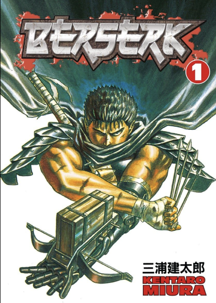
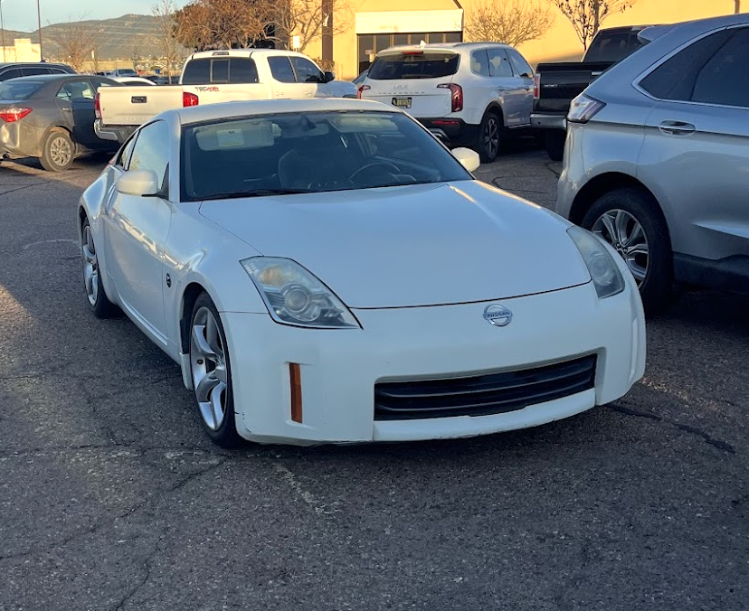
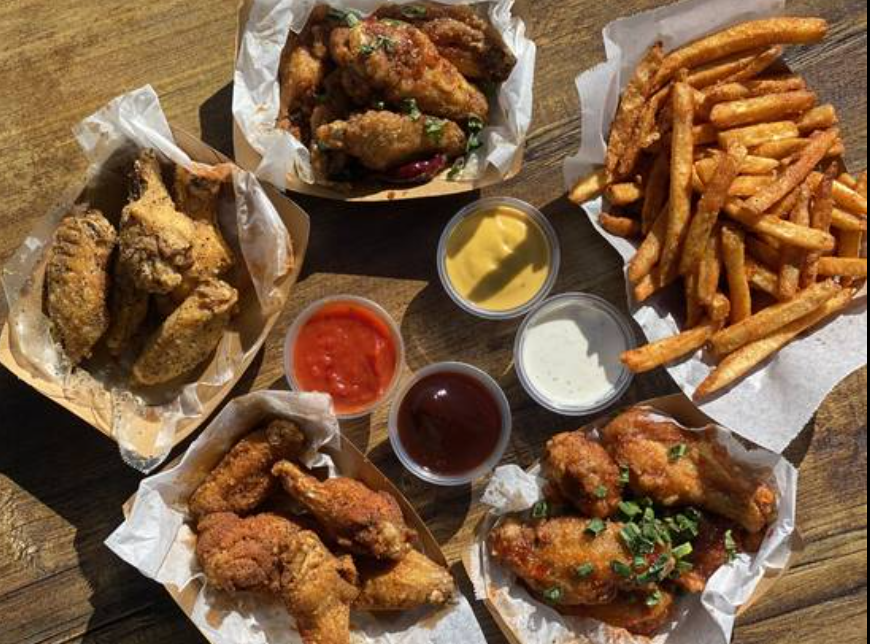

Here are a few of my favorite things:
Favorite MangaI'm currently reading an amazing manga about a swordsmith cursed with a mark of sacrifice. This mercenary embarks on a journey to discover his true dream.  |
My CarAlthough I left her back in New Mexico, I drive a 2008 Pearl 350Z. I love her even more because she's a manual!  |
Favorite Video GameRight now, I’m completely hooked on playing Marvel Rivals! 
|
Favorite FoodWings (buffalo flavor) and fries are definitely my favorite food!  |